今年的麦子又熟了~
识别文字连续阅读 · 原图附后
原始 PDF 不公开，本页展示捕获页面的截图。 识别文字按页序连续显示，全部原始截图附在文末，便于对照。文字由视觉转录整理，尚未经人工逐字核对，可能存在错字、漏字、漏行、顺序或断行错误。留言与作者回复仅限截图中可见的内容，不代表完整线上留言，也未据此推断留言总数。
OCR 识别提示（待核对）
- OCR/视觉转录文字，尚未逐字校对；可能错字、漏字、漏行，数字、姓名、表情、标点及断行也可能有误，请以截图为准。
- 这里只保留 PDF 已截到的正文、留言和作者回复；截图以外的留言不在此存档中。
- 未从截图推断留言总数或回复关系；手机界面文字也可能混入 OCR。
- 方括号中的表情说明是转录注释，原始表情请对照截图。
- 页面边界仅露出少量字形的重复行归到文字主体可见的相邻页；不推断缺失内容。
识别文字
文字按截图页序整理；页边重复行仅保留一次，原始 PDF 不公开。方括号中的表情说明为转录注释。
第 1 页对照原图
标普500大涨2.35%，纳指涨2.74%，纳指100大涨3.4%；
英伟达大跌4.3%，盘中一度下跌7.95%，随后跌幅收窄；谷歌微涨，苹果和微软涨幅2.4-2.75%；亚马逊、台积电涨3-3.5%；特斯拉、Meta、SpaceX涨5.1-5.5%，博通涨8.8%，AMD涨13.26%...
进取型账户中，目前仓位占比排序为英伟达、微软、谷歌、台积电、苹果、SpaceX、亚马逊、Meta、新增ETF、特斯拉、AMD、博通、甲骨文；
进取型账户的账面浮盈升至约24%；稳健型账户得益于宽基指数和消费龙头股、医药保健龙头股等拉升，账面浮盈升至约23.5%；防守型账户账面浮盈13%+；
第 2 页对照原图
目前现金储备约21%；目前来看，暂时没有什么其余的好机会了，后续如果没什么机会，这部分资金要调配了去吃息，等有机会了再套现用于把握机会。
我准备近期出门去转一转，看看加州以外的地区，看看这片土地上的经济和社会，有段时间没考察了，第一站先看加州本土，第二站准备去佛罗里达。
天气慢慢转凉了，我又怕冷，实在不想跑去天寒地冻的地方，那些地方等明年天气转暖了再去。
朋友的跨境电商最近两年也不好做，除了欧美在封堵，税负也变重，一直在寻求转型和解决方案。
最终他还是通过香港来解决这个问题。香港和新加坡有一点好的，就是税负低，属全球税负洼地：
属地征税，只对来源于本土的收入收税，不全球征税，香港的税负比新加坡还略低一些，因为新加坡除了属地征税，还兼顾属人征税，另外有9%的增值税；
香港的企业所得税按两级制，利润200万以内是8.25%，超过200万部分是16.25%，没有增值税和消
第 3 页对照原图
费税，对高营收和高利润企业很友好；
新加坡统一17%的税率，但对初创企业和中小企业减免力度大，公司成立前三年有免税，实际有效税率可以低至4.25%；
这两地由于不收资本利得税和股息预提税，因此非常适合做资产持有主体和财富管理，聚集了大量财富管理机构和个体。
这朋友是二十多年前玩游戏认识的，他是我的“狗头军师”，后来我出来做交换生，没玩游戏就慢慢失去了联系。
直到他结婚，我才又有了他的信息，他做跨境电商时我借了100万给他，这小子不仅把钱还了，还算了一部分股份给我。
这几年他也开始转型，完成原始资本积累后，也开始跟着买美股资产，目前收益很不错。
他说最近很多跨境电商的老板因税问题被限制出境，自己也是卖了一部分美股去填税，不然大概率也没法结清高额的税款。
第 4 页对照原图
他很不错，自己专业的事做得很好，不专业的事听劝，我之前跟他说过的那些风险控制，他都做得很到位。
我们都太渺小，有时一个大浪打过来就倾覆了。合规是风险控制很重要的一部分，其余的，就只能多备点救生衣和食物、淡水等。
大约在2020-2022年底，我还是劝过很多朋友、读者，要注意税负方面的合规，后来说的就越来越少了，映射到现实后，再提的意义不大。
这几年，很多人看着熟悉或有过交集的人，要么进去了，要么下去了，要么出去了，不知道该说什么好。
认识的一球友，房子刚被法拍4500多万成交后，还要再掏1000多万填进去。年过六旬，这辈子很难再有翻身的机会。
发展的窗口期打开了四十年，但并不意味着会一直遍地都是机会，未来的发展更多是科技+资本，留给普通人白手起家的机会很少。
我也在看，看等孩子们长大了，会不会适合回去创业。
第 5 页对照原图
这几年，村里的大爷每年都会说：今年的麦子又熟了。
说割麦子，显得既勤快踏实，又高雅浪漫，和割韭菜还是有很大不同的。
割完麦子，冬天也要来了。
繁华与肃杀，热烈与死寂，本是生命的一体两面。生命最热烈的样子是寂静；而最彻底的荒芜，也孕育着下一个轮回的喧嚣。
希望下一个春天来得不要太晚，不然很多人扛不过这个冬天。
... ...
周末陪孩子们做包子，灌汤包。
买了肉清洗干净，把瘦肉和肥肉分离，各自切片剁碎。
肥肉和瘦肉的比例大概是1:2，肥肉剁碎后放入拌馅盆中，烧开水倒入冲烫，边冲边搅拌，这样能把油脂烫出来，一共冲烫三次，并加入少许白酒去腥味。
第 6 页对照原图
温度还在，加入老抽搅拌，等冷却了再加调味料，主要是剁碎的姜末、盐、胡椒粉、鸡精、五香粉等；
彻底凉了，再加入剁碎的瘦肉，防止肉质老化，搅拌均匀后，放进冰箱冷冻至凝固；凝固后再放入葱花，搅拌均匀。
然后就是弄包子皮，把已经发酵好的面拿来切一块块，搓圆再拍扁，并弄薄，装入做好的馅。孩子们最喜欢玩这个，包括平时学做披萨，弄得满脸都是粉，很兴奋。
包好包子，放入蒸笼，大约15-17分钟左右，就蒸熟了。
带他们体验完，我和媳妇坐在院子里，一边看他们嬉闹，一边吃包子。
这几年很喜欢听老歌，歌词写得好，唱得也好，干净纯粹。
媳妇说我有点可惜，长得魂牵梦绕，唱得烟熏火燎、五音不全。没办法，老天是公平的，给你一副好皮囊，就不能再给好嗓子。
我选了《又见炊烟》，媳妇表示这是她爸爸生前最喜
第 7 页对照原图
欢的邓丽君唱的。
老二不知何时来到身旁，她告诉我们“这首歌要闭上眼听，才更有感觉”。我俩闭上眼，等再睁开眼，桌子上的包子不见了。
有时觉得，陪孩子也挺有趣的，三分教，七分等，多点包容和耐心，允许孩子慢慢来。
就这样吧。
[页面导航]
历史文章 · 目录
上一篇 · 不断让自己变得值钱~
作者提示：个人观点，仅供参考
阅读 2.8万
留言 28
第 8 页对照原图
[留言 1]
金渐成（作者）｜30分钟前｜赞47｜置顶
助农项目95折活动，最后一天了，有兴趣的可以看看：天叙丨新的活动，没兴趣的自行略过~
[留言 2]
与光同尘｜江苏｜25分钟前｜赞83
玑哥最近心情不错哟，连着两天能看到文章，也跟着有个好心情。
[作者回复留言 2]
金渐成（作者）｜24分钟前｜赞134
最近表达欲还不错，接下去更新就少了，出门去走走，考察调研。
[留言 3]
Py.｜北京｜21分钟前｜赞35
机哥这是又公布答案了吗？
[作者回复留言 3]
金渐成（作者）｜20分钟前｜赞126
我可啥都没说，现在被限流中，再说下去直接账号都被抬走了，你们可别冤枉我。
[留言 4]
Dexter Hou... [昵称截断]｜日本｜22分钟前｜赞29
这波反弹不是很想参与，等看看IPO情况，然后18号听听咨询吃个瓜再做考虑。
[作者回复留言 4]
金渐成（作者）｜18分钟前｜赞77
慢一点也没关系，按自己适合的节奏来，持仓的舒适感和适配度很重要。
第 9 页对照原图
[留言 5]
努柯 [太阳表情]｜北京｜18分钟前｜赞33
狗头军师这种朋友，才是真正做到了“贵人不可贱用”懂得感恩 有分寸感的人会走的更远
[作者回复留言 5]
金渐成（作者）｜11分钟前｜赞63
他现在也是净资产A9.6的小富人了，不能再叫人狗头军师，哈哈哈。只不过我还是喜欢这么叫，得改了。从底层杀出来的，很厉害。
[留言 6]
yt｜浙江｜17分钟前｜赞31
机哥，感觉没作业抄以后，反而操作上进步更大了，慢慢强迫自己去思考，到底什么才是最适合自己的
[作者回复留言 6]
金渐成（作者）｜14分钟前｜赞60
这是好事，挺好的，这样才能走出适合自己的路。
[留言 7]
一个演员｜浙江｜21分钟前｜赞26
哈哈哈。老二太可爱了，想起来我们小时候想坐别人的凳子总是用这个方法，他这是升级版本[两个咧嘴笑表情]
[作者回复留言 7]
金渐成（作者）｜19分钟前｜赞54
哈哈哈，同小时候，只是小时候的玩伴基本上没联系了。
[留言 8]
徽黄｜上海｜26分钟前｜赞25
少量放点皮冻，汤汁更多
[作者回复留言 8]
金渐成（作者）｜22分钟前｜赞48
做小笼包会更合适，下次试试。
第 10 页对照原图
[留言 9]
G｜广东｜17分钟前｜赞12
这几天还在想，机哥喜欢听歌吗，会跟嫂子去看演唱会吗，感觉想我老婆都没这么想😂
[作者回复留言 9]
金渐成（作者）｜14分钟前｜赞46
不去演唱会，不想花钱去听一堆人趴在耳边唱。听歌喜欢的，英文、日语、粤语、中文的都会听，听多了会发现很多歌曲来源于前两者的改编。
[读者回复留言 9 的作者回复]
G｜广东｜5分钟前｜赞3
回复 金渐成：港台很多经典歌是日语改编
[留言 10]
郭｜北京｜22分钟前｜赞17
机哥带孩子做包子太有趣了，想起了自己带小妞擀面皮，脸上弄点面粉，还笑呵呵的问 爸爸你看我好看吗？哈哈哈
[作者回复留言 10]
金渐成（作者）｜17分钟前｜赞43
带孩子包饺子也可以呀，我们家每年都会带娃做2次左右，娃们挺喜欢的。不过水饺皮是买现成的，没法自己做，少了些乐趣。
[留言 11]
Friend²⁰²⁶｜广东｜18分钟前｜赞23
狗头军师：“兄弟，我等着你爆了装备后捡了还你，不像别人捡了就跑”[狗头表情]
[作者回复留言 11]
金渐成（作者）｜9分钟前｜赞40
一看就老读者了，哈哈，那会一件装备几百块，抵得上别人半个月的工资了。
第 11 页对照原图
[留言 12]
孙东晨 [月亮和叶子表情]｜山东｜18分钟前｜赞12
哈哈哈，想起了周末冬至带闺女全家包饺子，闺女调皮，用面粉给他爷爷描眉毛，画腮帮。爷爷竟也不生气，跟闺女玩的贼开心。印象中那个严厉但也讲道理的父亲，到了孙女这儿多了一份温柔的疼爱，这可能就是隔代亲吧。
[作者回复留言 12]
金渐成（作者）｜10分钟前｜赞34
我父亲也是，在我们儿女眼中从小到大都很严肃，唯独面对孙子孙女这一辈，整天笑呵呵，换了个人似的。
[留言 13]
Watq｜浙江｜21分钟前｜赞5
感觉玑哥现在心态比在村里松弛很多
[作者回复留言 13]
金渐成（作者）｜3分钟前｜赞16
没那么多需要顾虑和操心的，没那么累。
[留言 14]
海宏｜广东｜20分钟前｜赞5
谢谢机哥的育儿观念，家里2个男娃，尝试用机哥的方法，效果超级好👍
[作者回复留言 14]
金渐成（作者）｜4分钟前｜赞15
也不一定对，我只是记录自己的做法和看法，权当交流了，你们自行斟酌，结合自己的情况选适合自己孩子的沟通方式。
第 12 页对照原图
[底部界面]
金渐成（认证标记）
点赞 1413 · 分享 783 · 喜欢 230 · 留言 28
原始图片 · 12 页
第 1 页 · 原始截图

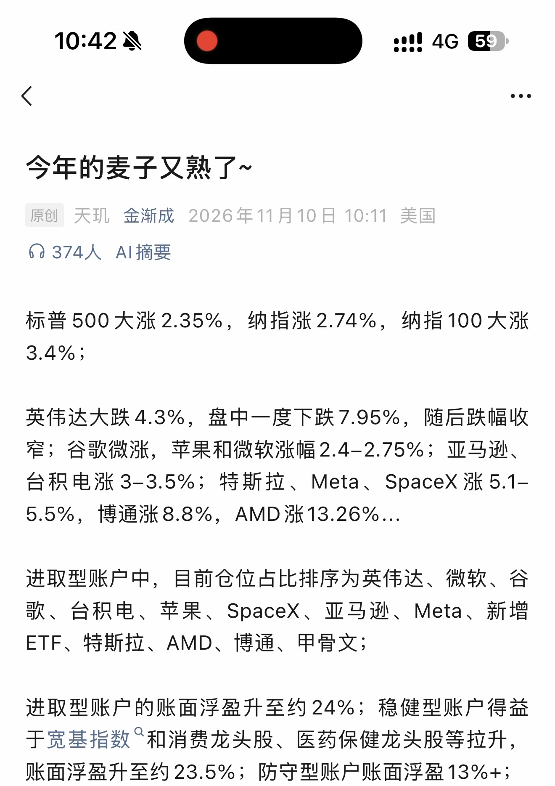
第 2 页 · 原始截图

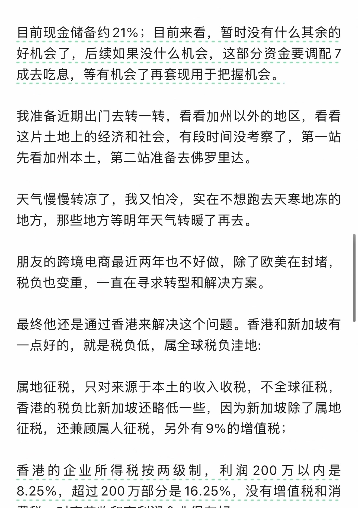
第 3 页 · 原始截图

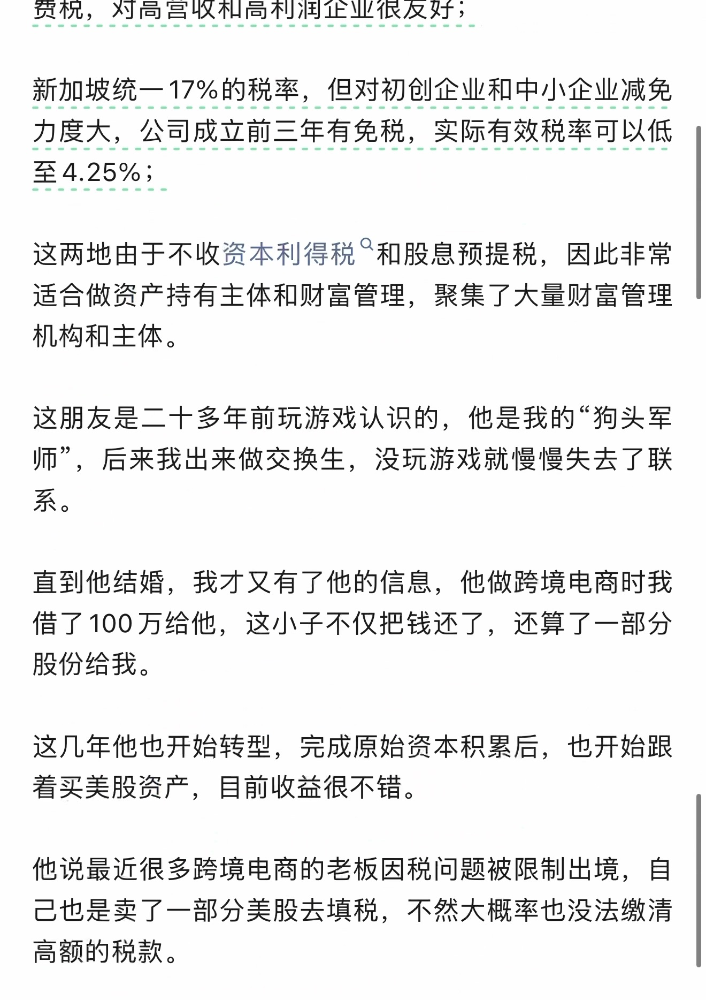
第 4 页 · 原始截图

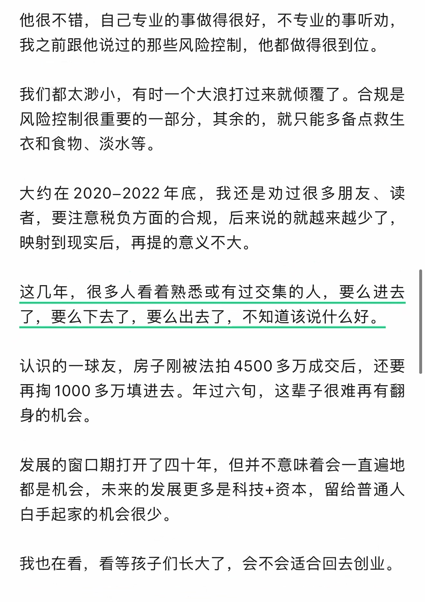
第 5 页 · 原始截图

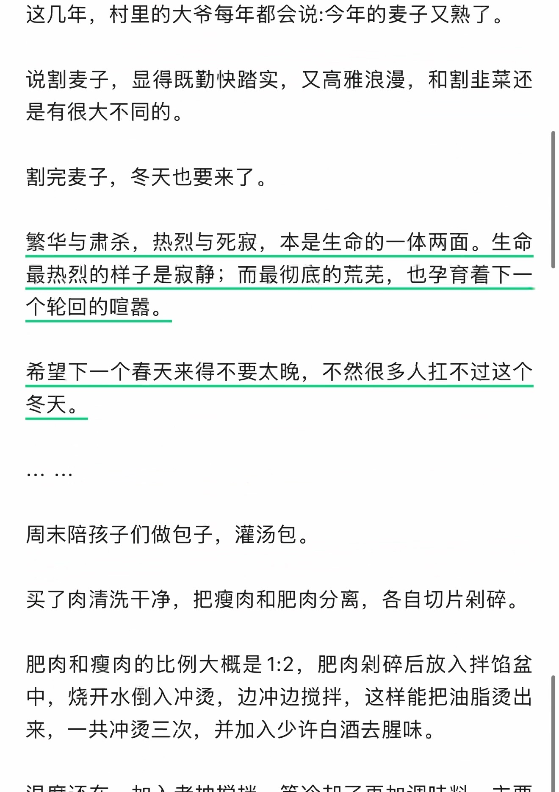
第 6 页 · 原始截图

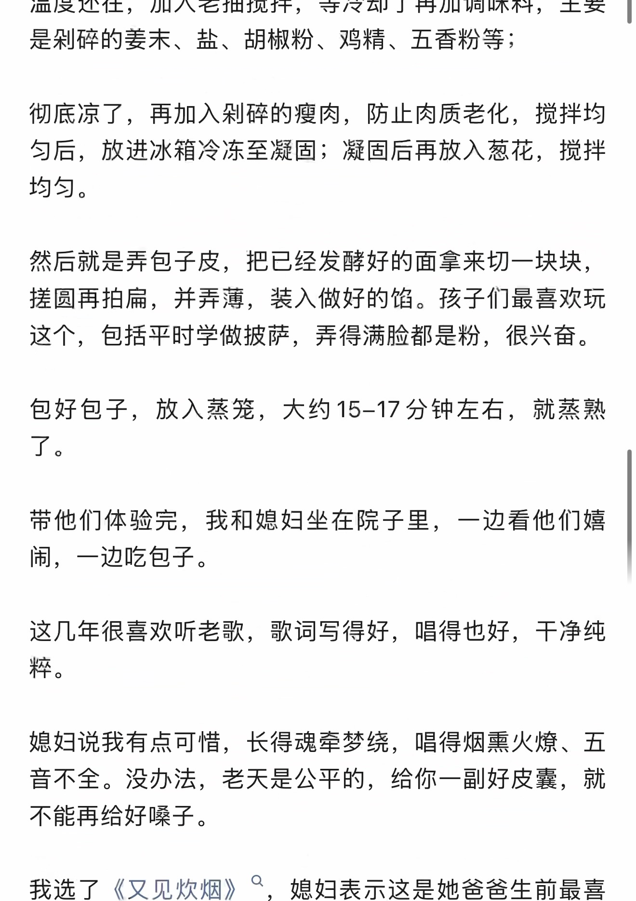
第 7 页 · 原始截图

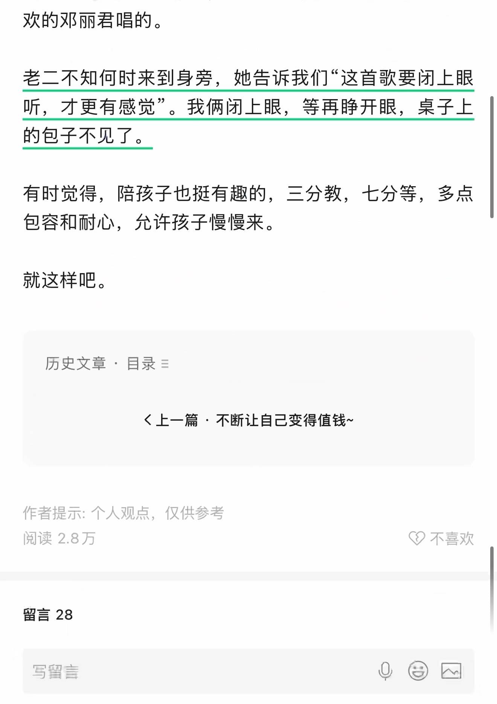
第 8 页 · 原始截图

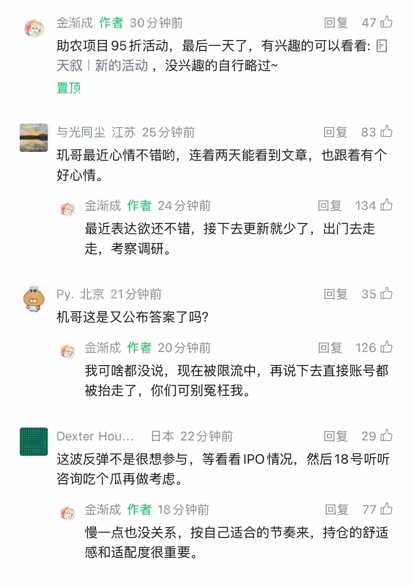
第 9 页 · 原始截图

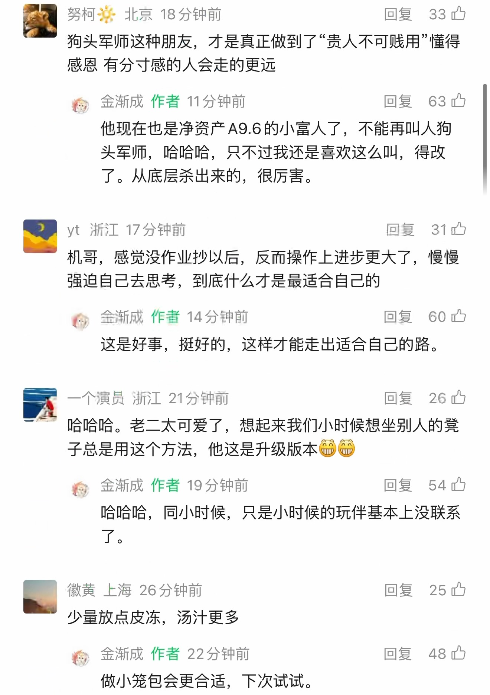
第 10 页 · 原始截图

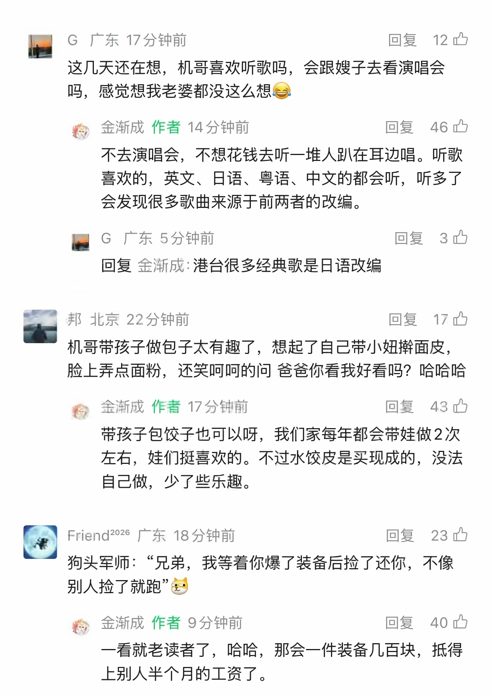
第 11 页 · 原始截图

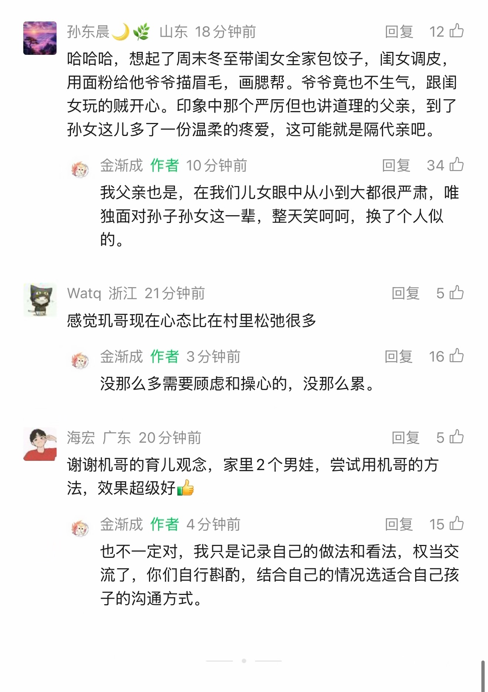
第 12 页 · 原始截图

按日期浏览全部来源（同日按条目标识排序）
回到页首